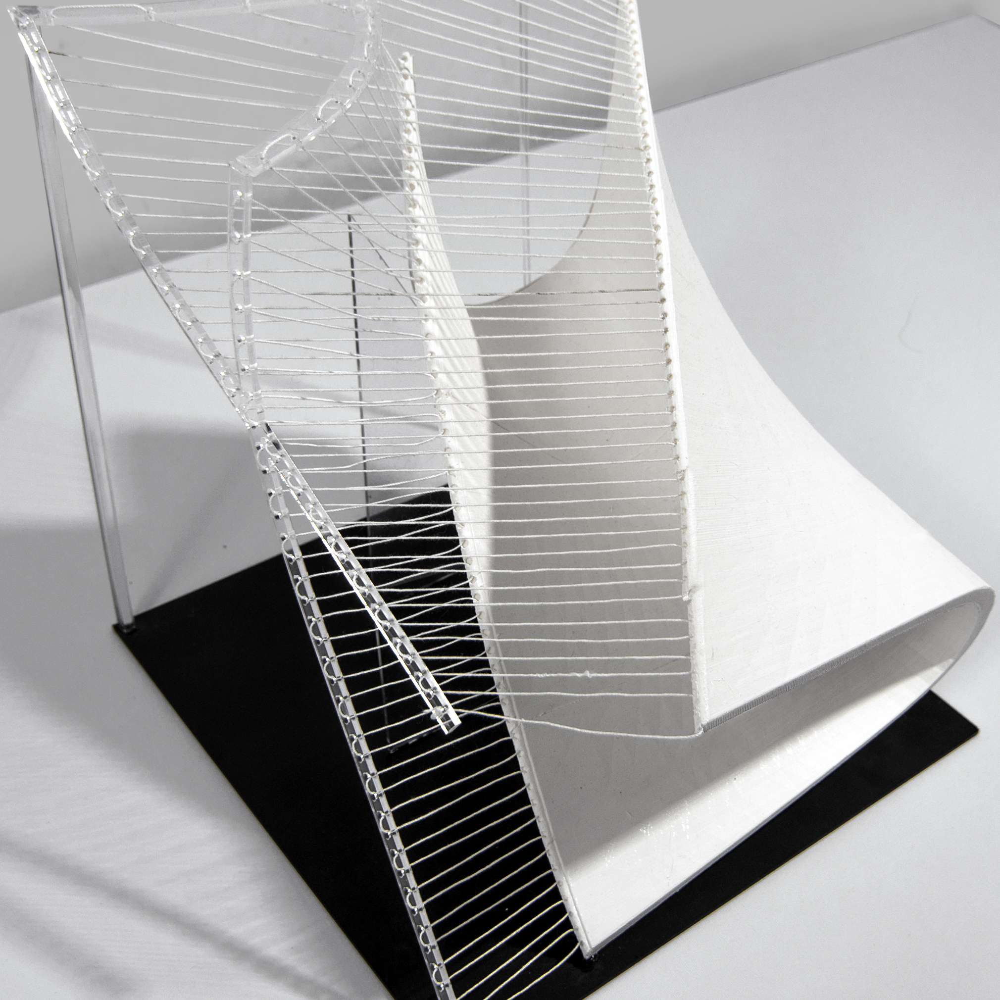
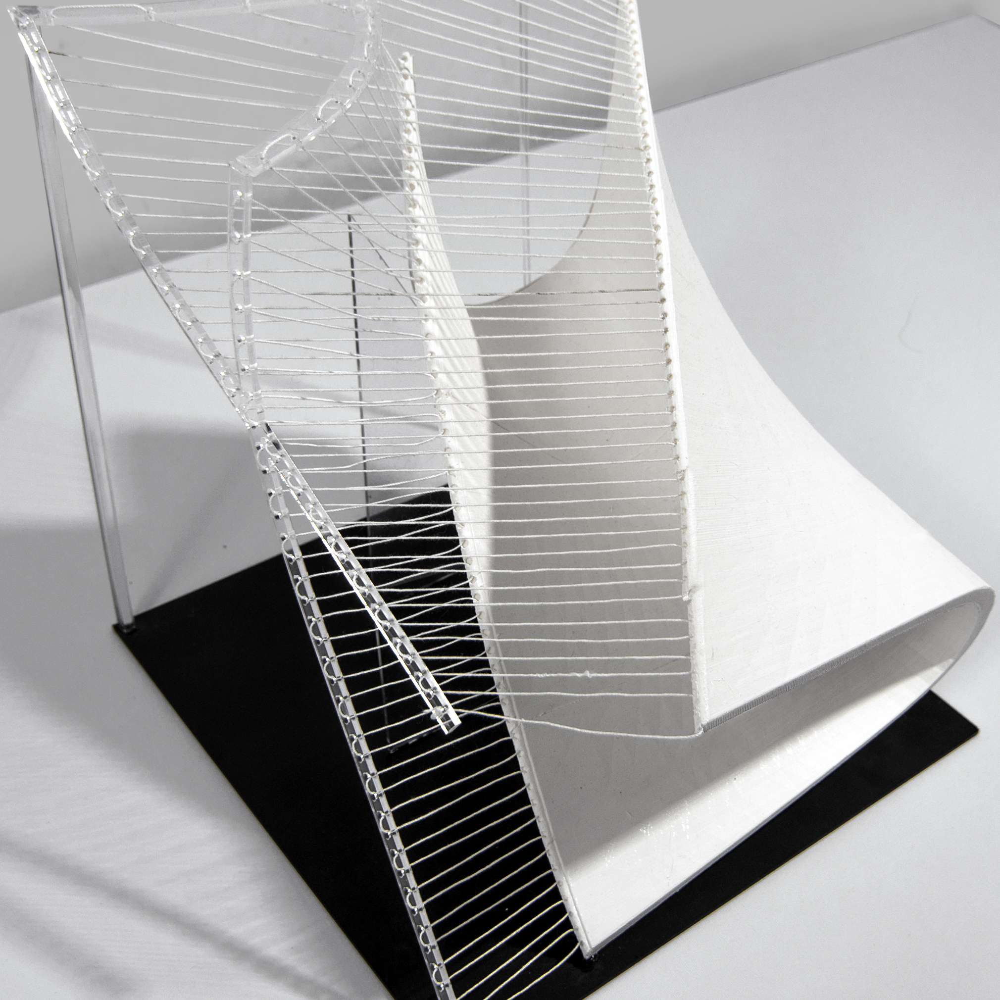

Prototypes
Model 1: above/ below/in between
 

Model 2: abstract articulation of the types of elements we are working with
Model 3: solid to projection to notation
Architectural Strategy
When it comes to the architectural strategy, we looked back on the initial dances and the way those relationships inhabit the architecture that they occupy. Through that, we determined that dance can exist above, below, or set within. This allowed us to look at the plan and the elevation in order to determine that actual occupied space of that dance within the architecture. We took the vertices of that surface area in order to generate a hyperbolic form, that allowed us to investigate the way that the ground plane interacts with this infinite set of points generated by the parabola, by creating spaces that can be inverted, or at times, above, or sometimes within.


Performace Figure : Large/Medium/Medium//Small/Small
In developing our performance spaces, we focused on establishing these relationships with the ground plane and through a series of scales with some that are small (100), medium (300) and large (750). When designing the envelope in which these figures lie, we looked to the site for orientation and extension of axes. The first being true north, Pier I, and Freedom Place. Then through this multi-axial orientation we placed the figures through a processional sequence and determined the voids around them based on how they intersected with a regular envelope that was then striated to continue this uniformity from the site.
When designing the envelope in which these figures lie, we looked to the site for orientation and extension of axes. The first being true north, Pier I, and Freedom Place. Then through this multi-axial orientation we placed the figures through a processional sequence and determined the voids around them based on how they intersected with a regular envelope that was then striated to continue this uniformity from the site.

Floor Plan
A visitor or dancer enters through the main lobby and they are greeted by this grand staircase that leads them to a main path that circulates throughout the building. And within this path, or “indoor street,” are moments of informal performance areas, gathering spaces, foyers, and open plan libraries that are denoted with a change in materiality. The rest of these exterior programming remains flexible and organic to continue the language of the figures. In developing the procession, we looked to our study of notation for time sequence and intervals, which we then used to generate the movement to and from each space.